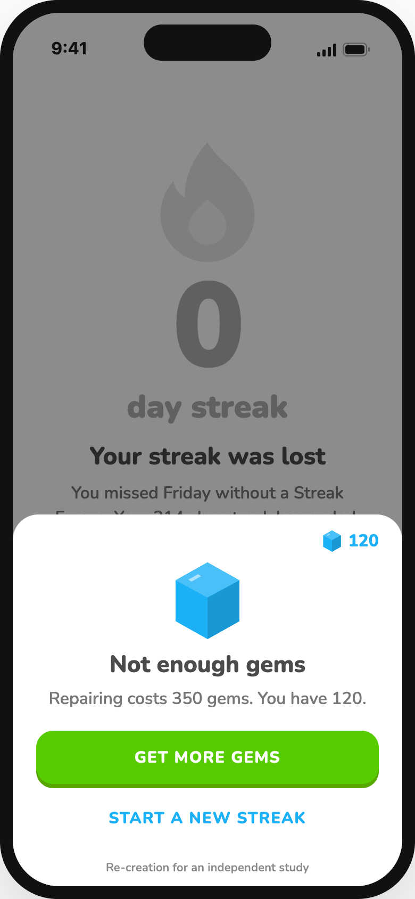
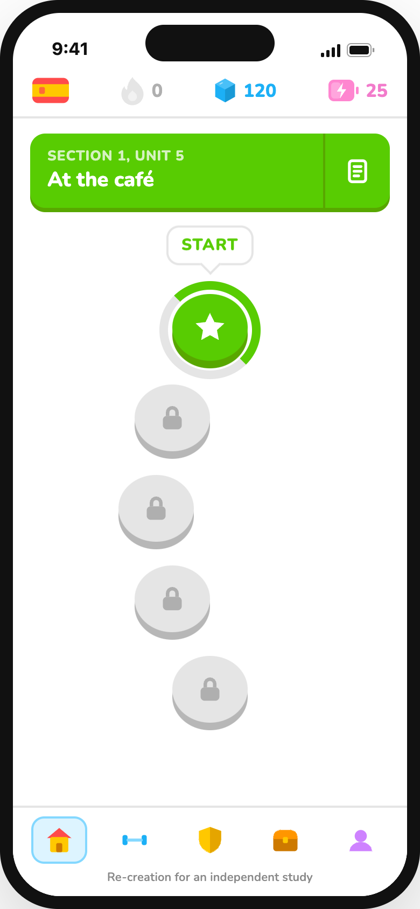
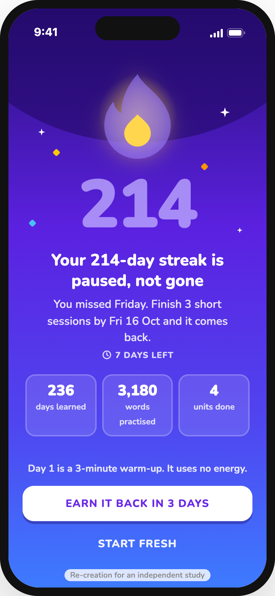
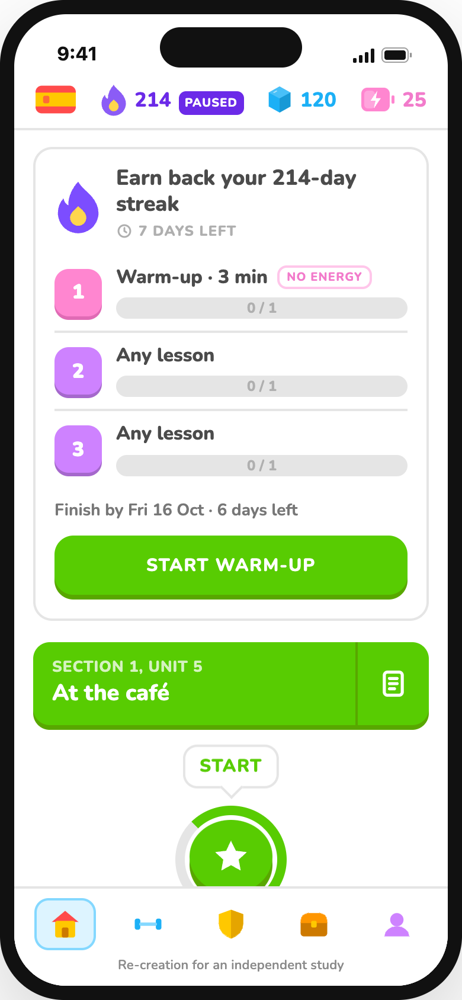
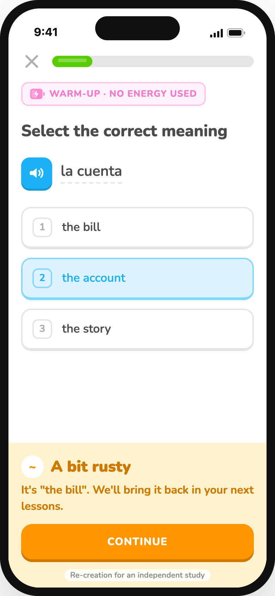
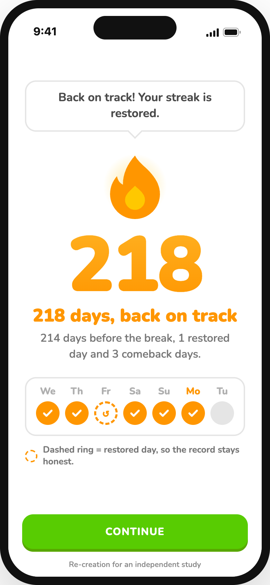

When a long streak breaks, it resets to zero and the way back costs gems. In June 2026, 15.4 million learners took a one-month offer to revive a lost streak, and they kept learning better than a typical returning group. Then the offer ended. This makes the way back permanent.
Independent study by Mitul Vaghasiya, not affiliated with Duolingo. Every screen below is my re-creation in Duolingo’s visual style, based on its App Store screenshots (10 Oct 2026) and the public images listed in references/. They are not screenshots of the real app.
Re-created in the real app’s style. Where no public image of a state exists, it follows reviews and help pages, as noted in the case study.

1The streak is gone, and repairing it costs gems the learner doesn’t have. Gem numbers are placeholders.
Loss aversion
2Nothing on Home shows the 214 days that came before. Once a goal feels broken, people tend to give up on it.
What-the-hell effectThe same moment, in 4 screens.

1The number stays, in grey. Lifetime effort sits underneath. Two equal choices: earn it back, or start fresh.
Loss aversion, used kindly
2Three steps, one a day, within a week. The flame shows “214 paused”, never 0.
Goal-gradient effect
3A warm-up built from the learner’s weakest words. A miss is “a bit rusty”, and the answer is shown.
Less friction at high intent
4The missed day gets a dashed ring, so a restored streak is never passed off as an unbroken one.
Fairness and trustDoes a safety net make people practise less on busy days? If 3 of 5 testers say yes, or say a restored streak “doesn’t count”, the idea needs rethinking.